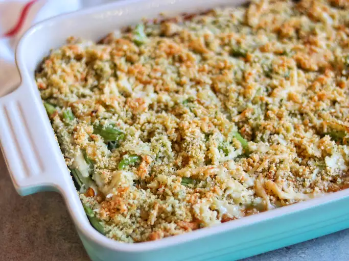

Back To Home Page
French Onion Green Bean Casserole

Description
This French onion green bean casserole puts a gourmet twist on a classic dish by combining green beans with caramelized onions, mushrooms, and Gruyère cheese.
Ingredients
- 1 tablespoon olive oil
- 1 medium yellow onion, thinly sliced
- 1 pinch salt
- 1 tablespoon balsamic vinegar
- 2 tablespoons unsalted butter
- 1 (8 ounce) package sliced fresh mushrooms
- 2 cloves garlic, minced
- 1/2 teaspoon dried thyme
- 2 tablespoons all-purpose flour
- 1 cup vegetable broth
- 1/2 cup heavy cream
- 1/2 cup shredded Gruyère cheese
- 1/4 cup grated Parmesan cheese
- 1 (16 ounce) package frozen French-cut green beans, thawed
- 1 1/2 cups French-fried onions, divided
Steps
- Preheat the oven to 350°F (175°C).
- Heat olive oil in a skillet over medium heat. Add sliced onion and a pinch of salt. Cook, stirring often, until caramelized, about 20 minutes. Stir in balsamic vinegar and cook 1 minute more.
- Push onions to the side and add butter. Once melted, stir in mushrooms, garlic, and thyme. Cook until mushrooms soften, about 5 minutes.
- Sprinkle flour over the vegetables, stir, and cook for 2 minutes. Slowly whisk in broth and cream, bring to a simmer, and cook until slightly thickened, about 5 minutes.
- Remove from heat and stir in Gruyère and Parmesan cheeses until melted. Fold in green beans and 1 cup of the French-fried onions.
- Transfer mixture to a greased baking dish and bake for 20 minutes. Top with remaining fried onions and bake 5 more minutes.